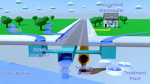
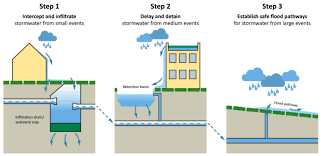
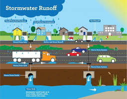
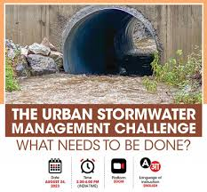
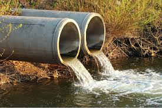

Urban Drainage System and Its Maintenance

What is an Urban Drainage System? An urban drainage system is a network of structures and infrastructure designed to manage stormwater and wastewater in cities. It prevents flooding, protects water quality, and ensures proper disposal of rainwater and sewage.
Types of Urban Drainage Systems:
- Surface Drainage System: Includes gutters, drains, and stormwater channels to direct rainwater away from roads and buildings.
- Subsurface Drainage System: Underground pipes and tunnels that carry wastewater and stormwater to prevent waterlogging.
- Combined Drainage System: Handles both stormwater and sewage in the same pipelines, requiring large treatment plants.
- Separate Drainage System: Separate pipelines for rainwater and sewage, preventing contamination of water bodies.

Importance of Urban Drainage Maintenance:
- Prevents flooding by ensuring water flows properly.
- Controls pollution by stopping contaminants from entering rivers and lakes.
- Increases infrastructure lifespan by preventing damage to roads and drainage networks.
- Protects public health by reducing stagnant water and the spread of diseases.

Urban Drainage System Maintenance Practices:
- Regular cleaning of drains and gutters to remove debris and trash.
- Inspection of pipelines using CCTV cameras or manual checks.
- Desilting and dredging to remove sediment buildup.
- Use of Sustainable Drainage Systems (SuDS) like rain gardens and permeable pavements.
- Public awareness and community participation to educate citizens on waste disposal.
- Emergency response planning for heavy rains and floods.

Challenges in Urban Drainage Maintenance:
- Rapid Urbanization: More concrete surfaces reduce water absorption.
- Climate Change: Unpredictable heavy rainfall can overwhelm drainage systems.
- Illegal Dumping: Waste in drains causes severe blockages.
- Aging Infrastructure: Old drainage systems need upgrades and repairs.

Conclusion: A well-maintained urban drainage system is essential for a sustainable city. Regular maintenance, innovative solutions, and community involvement can help manage urban water efficiently and reduce environmental impacts.